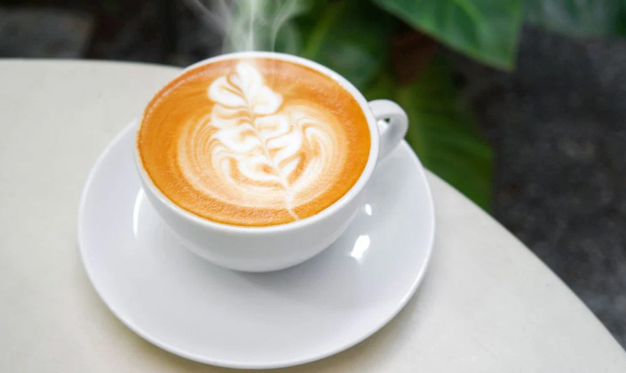

What is Hot Latte?
A hot pumpkin spice latte is the traditional way to have the drink. Being most commonly ordered in the Fall, the drink can warm you up during the colder months of the year while being timely with the season.
A hot pumpkin spice latte is the traditional way to have the drink. Being most commonly ordered in the Fall, the drink can warm you up during the colder months of the year while being timely with the season.